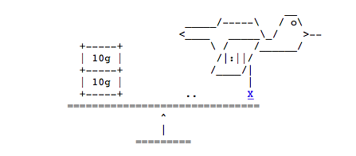
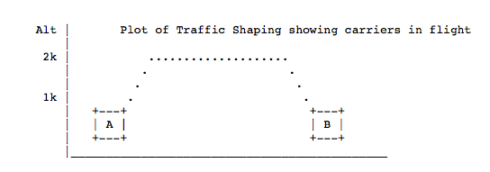

RFC1149 - A Standard for the Transmission of IP
Datagrams on Avian Carriers
Status of this Memo
This memo describes an experimental method for the encapsulation of
IP
datagrams in avian carriers. This specification is primarily
useful in Metropolitan Area Networks. This is an experimental, not
recommended standard. Distribution of this memo is unlimited.
Overview and Rational
Avian carriers can provide high delay, low throughput, and low
altitude service. The connection topology is limited to a single
point-to-point path for each carrier, used with standard carriers,
but many carriers can be used without significant interference with
each other, outside of early spring. This is because of the 3D ether
space available to the carriers, in contrast to the 1D ether used by
IEEE802.3. The carriers have an intrinsic collision avoidance
system, which increases availability. Unlike some network
technologies, such as packet radio, communication is not limited to
line-of-sight distance. Connection oriented service is available in
some cities, usually based upon a central hub topology.
Frame Format
The IP datagram is printed, on a small scroll of paper, in
hexadecimal, with each octet separated by whitestuff and blackstuff.
The scroll of paper is wrapped around one leg of the avian carrier.
A band of duct tape is used to secure the datagram's edges. The
bandwidth is limited to the leg length.
The MTU is variable, and
paradoxically, generally increases with increased carrier age. A
typical MTU is 256 milligrams.
Some datagram padding may be needed.
Upon receipt, the duct tape is removed and the paper copy of the
datagram is optically scanned into a electronically transmittable
form.
Discussion
Multiple types of service can be provided with a prioritized pecking
order. An additional property is built-in worm detection and
eradication. Because IP only guarantees best effort delivery, loss
of a carrier can be tolerated. With time, the carriers are self-regenerating.
While broadcasting is not specified, storms can cause
data loss. There is persistent delivery retry, until the carrier
drops. Audit trails are automatically generated, and can often be
found on logs and cable trays.
Security Considerations
Security is not generally a problem in normal operation, but special
measures must be taken (such as data encryption) when avian carriers
are used in a tactical environment.
Author's Address
David Waitzman
BBN Systems and Technologies Corporation
BBN Labs Division
10 Moulton Street
Cambridge, MA 02238
Phone: (617) 873-4323
EMail: dwaitzman@BBN.COM
RFC2549 - IP over Avian Carriers with Quality of Service
Status of this Memo
This memo defines an Experimental Protocol for the Internet
community. It does not specify an Internet standard of any kind.
Discussion and suggestions for improvement are requested.
Distribution of this memo is unlimited.
Copyright Notice
Copyright (C) The Internet Society (1999). All Rights Reserved.
Abstract
This memo amends RFC 1149, "A Standard for the Transmission of
IP Datagrams on Avian Carriers",
with Quality of Service information.
This is an experimental, not recommended standard.
Overview and Rational
The following quality of service levels are available: Concorde,
First, Business, and Coach. Concorde class offers expedited data
delivery. One major benefit to using Avian Carriers is that this is
the only networking technology that earns frequent flyer miles, plus
the Concorde and First classes of service earn 50% bonus miles per
packet. Ostriches are an alternate carrier that have much greater
bulk transfer capability but provide slower delivery, and require the
use of bridges between domains.
The service level is indicated on a per-carrier basis by bar-code
markings on the wing. One implementation strategy is for a bar-code
reader to scan each carrier as it enters the router and then enqueue
it in the proper queue, gated to prevent exit until the proper time.
The carriers may sleep while enqueued.
For secure networks, carriers may have classes Prime or Choice.
Prime carriers are self-keying when using public key encryption.
Some distributors have been known to falsely classify Choice carriers
as Prime.
Packets MAY be marked for deletion using RED paint while enqueued.
Weighted fair queueing (WFQ) MAY be implemented using scales, as
shown:

Carriers in the queue too long may leave log entries, as shown on the
scale.
The following is a plot of traffic shaping, from coop-erative host
sites.

Avian carriers normally bypass bridges and tunnels but will seek out
worm hole tunnels. When carrying web traffic, the carriers may
digest the spiders, leaving behind a more compact representation.
The carriers may be confused by mirrors.
Round-robin queueing is not recommended. Robins make for well-tuned
networks but do not support the necessary auto-homing feature.
A BOF was held at the last IETF
but only Avian Carriers were allowed entry, so we don't know the results
other than we're sure they think MPLS is great.
Our attempts at attaching labels to the carriers have been met with resistance.
NATs are not recommended either
-- as with many protocols, modifying the brain-embedded IP addresses is difficult,
plus Avian Carriers MAY eat the NATs. Encapsulation may be done with saran wrappers.
Unintentional encapsulation in hawks has been known to occur, with
decapsulation being messy and the packets mangled.
Loose source routes are a viable evolutionary alternative enhanced
standards-based MSWindows-compliant technology, but strict source
routes MUST NOT be used, as they are a choke-point.
The ITU
has offered the IETF formal alignment with its corresponding
technology, Penguins, but that won't fly.
Multicasting is supported, but requires the implementation of a clone
device. Carriers may be lost if they are based on a tree as it is
being pruned. The carriers propagate via an inheritance tree. The
carriers have an average TTL of 15 years, so their use in expanding
ring searches is limited.
Additional quality of service discussion can be found in a Michelin's
guide.
MIB and Management issues
AvCarrier2 OBJECT-TYPE
SYNTAX SEQUENCE OF DNA
MAX-ACCESS can't-read
STATUS living
DESCRIPTION "Definition of an avian carrier"
::= { life eukaryotes mitochondrial_eukaryotes crown_eukaryotes
metazoa chordata craniata vertebrata gnathostomata
sarcopterygii terrestrial_vertebrates amniota diapsida
archosauromorpha archosauria dinosauria aves neornithes
columbiformes columbidae columba livia }
AvCarrier OBJECT-TYPE
SYNTAX SET OF Cells
MAX-ACCESS not-accessible
STATUS obsolete
DESCRIPTION "Definition of an avian carrier"
::= { life animalia chordata vertebrata aves
columbiformes columbidae columba livia }
PulseRate OBJECT-TYPE
SYNTAX Gauge(0..300)
MAX-ACCESS read-only
STATUS current
DESCRIPTION "Pulse rate of carrier, as measured in neck.
Frequent sampling is disruptive to operations."
::= { AvCarrier 1}
The carriers will not line up in lexigraphic order but will
naturally order in a large V shape. Bulk retrieval is possible
using the Powerful Get-Net operator.In this document, several words are used to signify the requirements
of the specification. These words are often capitalized.
Specification of Requirements
In this document, several words are used to signify the requirements
of the specification. These words are often capitalized.
MUST Usually.
MUST NOT Usually not.
SHOULD Only when Marketing insists.
MAY Only if it doesn't cost extra.
Security Considerations
There are privacy issues with stool pigeons.
Agoraphobic carriers are very insecure in operation.
Patent Considerations
There is ongoing litigation about which is the prior art: carrier or egg.
References
Waitzman, D., "A Standard for the Transmission of IP Datagrams on
Avian Carriers", RFC 1149, 1 April 1990.
ACKnowledgments
Jim.Carlson.Ibnets.com > Jon.Saperia . ack 32 win 123 (DF)
Ross Callon, Scott Bradner, Charlie Lynn ...
Author's Address
David Waitzman
IronBridge Networks
55 Hayden Ave
Lexington, MA 02421
Phone: (781) 372-8161
EMail: djw@vineyard.net
RFC6214 - Adaptation of RFC 1149 for IPv6
Abstract
This document specifies a method for transmission of IPv6 datagrams
over the same medium as specified for IPv4 datagrams in RFC 1149.
Status of This memo
This document is not an Internet Standards Track specification; it is
published for informational purposes.
This is a contribution to the RFC Series, independently of any other
RFC stream. The RFC Editor has chosen to publish this document at
its discretion and makes no statement about its value for
implementation or deployment. Documents approved for publication by
the RFC Editor are not a candidate for any level of Internet
Standard; see Section 2 of RFC 5741.
Information about the current status of this document, any errata,
and how to provide feedback on it may be obtained at
RFC6214.
Copyright Notice
Copyright (c) 2011 IETF
Trust and the persons identified as the document authors. All rights reserved.
This document is subject to BCP 78 and the IETF Trust's Legal
Provisions Relating to IETF Documents
in effect on the date of publication of this document.
Please review these documents carefully, as they describe your rights
and restrictions with respect to this document.
1. Introduction
As shown by [RFC6036], many service providers are actively planning
to deploy IPv6 to alleviate the imminent shortage of IPv4 addresses.
This will affect all service providers who have implemented
[RFC1149]. It is therefore necessary, indeed urgent, to specify a
method of transmitting IPv6 datagrams [RFC2460] over the RFC 1149
medium, rather than obliging those service providers to migrate to a
different medium. This document offers such a specification.
2. Normative Notation
The key words "MUST", "MUST NOT", "REQUIRED", "SHALL", "SHALL NOT",
"SHOULD", "SHOULD NOT", "RECOMMENDED", "MAY", and "OPTIONAL" in this
document are to be interpreted as described in [RFC2119].
3. Detailed Specification
Unless otherwise stated, the provisions of [RFC1149] and [RFC2460]
apply throughout.
3.1. Maximum Transmission Unit
As noted in RFC 1149, the MTU
is variable, and generally increases with increased carrier age.
Since the minimum link MTU allowed by RFC 2460 is 1280 octets,
this means that older carriers MUST be used for IPv6.
RFC 1149 does not provide exact conversion factors between
age and milligrams, or between milligrams and octets.
These conversion factors are implementation dependent, but as an
illustrative example, we assume that the 256 milligram MTU suggested
in RFC 1149 corresponds to an MTU of 576 octets. In that case, the
typical MTU for the present specification will be at least
256*1280/576, which is approximately 569 milligrams. Again as an
illustrative example, this is likely to require a carrier age of at
least 365 days.
Furthermore, the MTU issues are non-linear with carrier age. That
is, a young carrier can only carry small payloads, an adult carrier
can carry jumbograms [RFC2675], and an elderly carrier can again
carry only smaller payloads. There is also an effect on transit time
depending on carrier age, affecting bandwidth-delay product and hence
the performance of TCP .
3.2. Frame Format
RFC 1149 does not specify the use of any link layer tag such as an
Ethertype or, worse, an OSI Link Layer or SNAP header [RFC1042].
Indeed, header snaps are known to worsen the quality of service
provided by RFC 1149 carriers. In the interests of efficiency and to
avoid excessive energy consumption while packets are in flight
through the network, no such link layer tag is required for IPv6
packets either. The frame format is therefore a pure IPv6 packet as
defined in [RFC2460], encoded and decoded as defined in [RFC1149].
One important consequence of this is that in a dual-stack deployment
[RFC4213], the receiver MUST inspect the IP protocol version number
in the first four bits of every packet, as the only means to
demultiplex a mixture of IPv4 and IPv6 packets.
3.3. Address Configuration
The lack of any form of link layer protocol means that link-local
addresses cannot be formed, as there is no way to address anything
except the other end of the link.
Similarly, there is no method to map an IPv6 unicast address to a
link layer address, since there is no link layer address in the first
place. IPv6 Neighbor Discovery [RFC4861] is therefore impossible.
Implementations SHOULD NOT even try to use stateless address auto-
configuration [RFC4862]. This recommendation is because this
mechanism requires a stable interface identifier formed in a way
compatible with [RFC4291]. Unfortunately the transmission elements
specified by RFC 1149 are not generally stable enough for this and
may become highly unstable in the presence of a cross-wind.
In most deployments, either the end points of the link remain
unnumbered, or a /127 prefix and static addresses MAY be assigned.
See [IPv6-PREFIXLEN] for further discussion.
3.4. Multicast
RFC 1149 does not specify a multicast address mapping. It has been
reported that attempts to implement IPv4 multicast delivery have
resulted in excessive noise in transmission elements, with subsequent
drops of packet digests. At the present time, an IPv6 multicast
mapping has not been specified, to avoid such problems.
4. Quality-of-Service Considerations
[RFC2549] is also applicable in the IPv6 case. However, the author
of RFC 2549 did not take account of the availability of the
Differentiated Services model [RFC2474]. IPv6 packets carrying a
non-default Differentiated Services Code Point (DSCP) value in their
Traffic Class field [RFC2460] MUST be specially encoded using green
or blue ink such that the DSCP is externally visible. Note that red
ink MUST NOT be used to avoid confusion with the usage of red paint
specified in RFC 2549.
RFC 2549 did not consider the impact on quality of service of
different types of carriers. There is a broad range. Some are very
fast but can only carry small payloads and transit short distances,
others are slower but carry large payloads and transit very large
distances. It may be appropriate to select the individual carrier
for a packet on the basis of its DSCP value. Indeed, different
carriers will implement different per-hop behaviors according to RFC
2474.
5. Routing and Tunneling Considerations
Routing carriers through the territory of similar carriers, without
peering agreements, will sometimes cause abrupt route changes,
looping packets, and out-of-order delivery. Similarly, routing
carriers through the territory of predatory carriers may potentially
cause severe packet loss. It is strongly recommended that these
factors be considered in the routing algorithm used to create carrier
routing tables. Implementers should consider policy-based routing to
ensure reliable packet delivery by routing around areas where
territorial and predatory carriers are prevalent.
There is evidence that some carriers have a propensity to eat other
carriers and then carry the eaten payloads. Perhaps this provides a
new way to tunnel an IPv4 packet in an IPv6 payload, or vice versa.
However, the decapsulation mechanism is unclear at the time of this
writing.
6. Multihoming Considerations
Some types of carriers are notoriously good at homing. Surprisingly,
this property is not mentioned in RFC 1149. Unfortunately, they
prove to have no talent for multihoming, and in fact enter a routing
loop whenever multihoming is attempted. This appears to be a
fundamental restriction on the topologies in which both RFC 1149 and
the present specification can be deployed.
7. Internationalization Considerations
In some locations, such as New Zealand, a significant proportion of
carriers are only able to execute short hops, and only at times when
the background level of photon emission is extremely low. This will
impact the availability and throughput of the solution in such
locations.
8. Security Considerations
The security considerations of [RFC1149] apply. In addition, recent
experience suggests that the transmission elements are exposed to
many different forms of denial-of-service attacks, especially when
perching. Also, the absence of link layer identifiers referred to
above, combined with the lack of checksums in the IPv6 header,
basically means that any transmission element could be mistaken for
any other, with no means of detecting the substitution at the network
layer. The use of an upper-layer security mechanism of some kind
seems like a really good idea.
There is a known risk of infection by the so-called H5N1 virus.
Appropriate detection and quarantine measures MUST be available.
9. IANA Considerations
This document requests no action by IANA. However, registry clean-up
may be necessary after interoperability testing, especially if
multicast has been attempted.
10. Acknowledgements
Steve Deering was kind enough to review this document for conformance
with IPv6 requirements. We acknowledge in advance the many errata in
this document that will be reported by Alfred Hoenes.
This document was produced using the xml2rfc tool [RFC2629].
11. References
11.1. Normative References
[RFC1149] Waitzman, D., "Standard for the transmission of IP
datagrams on avian carriers", RFC 1149, April 1990.
[RFC2119] Bradner, S., "Key words for use in RFCs to Indicate
Requirement Levels", BCP 14, RFC 2119, March 1997.
[RFC2460] Deering, S. and R. Hinden, "Internet Protocol,
Version 6 (IPv6) Specification", RFC 2460,
December 1998.
[RFC2474] Nichols, K., Blake, S., Baker, F., and D. Black,
"Definition of the Differentiated Services Field
(DS Field) in the IPv4 and IPv6 Headers", RFC 2474,
December 1998.
[RFC2675] Borman, D., Deering, S., and R. Hinden, "IPv6
Jumbograms", RFC 2675, August 1999.
[RFC4213] Nordmark, E. and R. Gilligan, "Basic Transition
Mechanisms for IPv6 Hosts and Routers", RFC 4213,
October 2005.
11.2. Informative References
[IPv6-PREFIXLEN] Kohno, M., Nitzan, B., Bush, R., Matsuzaki, Y.,
Colitti, L., and T. Narten, "Using 127-bit IPv6
Prefixes on Inter-Router Links", Work in Progress,
October 2010.
[RFC1042] Postel, J. and J. Reynolds, "Standard for the
transmission of IP datagrams over IEEE 802
networks", STD 43, RFC 1042, February 1988.
[RFC2549] Waitzman, D., "IP over Avian Carriers with Quality
of Service", RFC 2549, April 1999.
[RFC2629] Rose, M., "Writing I-Ds and RFCs using XML",
RFC 2629, June 1999.
[RFC4291] Hinden, R. and S. Deering, "IP Version 6 Addressing
Architecture", RFC 4291, February 2006.
[RFC4861] Narten, T., Nordmark, E., Simpson, W., and H.
Soliman, "Neighbor Discovery for IP version 6
(IPv6)", RFC 4861, September 2007.
[RFC4862] Thomson, S., Narten, T., and T. Jinmei, "IPv6
Stateless Address Autoconfiguration", RFC 4862,
September 2007.
[RFC6036] Carpenter, B. and S. Jiang, "Emerging Service
Provider Scenarios for IPv6 Deployment", RFC 6036,
October 2010.
Authors' Addresses
Brian Carpenter
Department of Computer Science
University of Auckland
PB 92019
Auckland, 1142
New Zealand
EMail: brian.e.carpenter@gmail.com
Robert M. Hinden
Check Point Software Technologies, Inc.
800 Bridge Parkway
Redwood City, CA 94065
US
Phone: +1.650.387.6118
EMail: bob.hinden@gmail.com